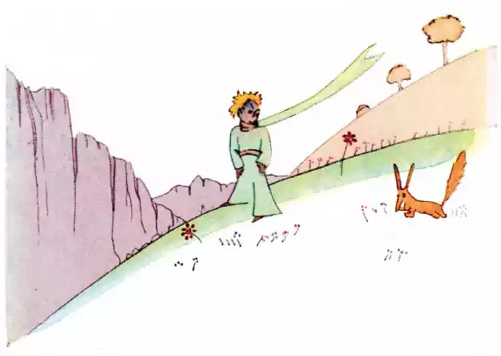
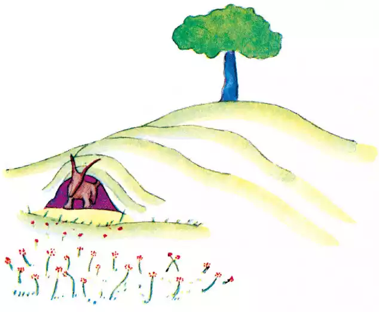
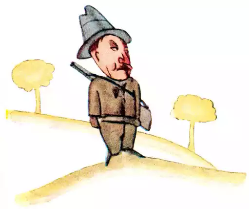

译本一
就在这时狐狸出现了。
“早哇，”狐狸说。
“早，”小王子有礼貌地回答，他转过身来，却什么也没看到。
“我在这儿呢，”那声音说，“在苹果树下面……”
“你是谁？”小王子说，“你很漂亮。”
“我是一只狐狸，”狐狸说。
“来和我一起玩吧，”小王子提议，“我很不快活……”
“我不能和你一起玩，”狐狸说，“还没人驯养过我呢。”
“啊！对不起，”小王子说。
不过，他想了想又说：
“‘驯养’是什么意思？”
“你一定不是这儿的人，”狐狸说，“你来寻找什么呢？”
“我来找人，”小王子说，“‘驯养’是什么意思？”
“人哪，”狐狸说，“他们有枪，还打猎。讨厌极了！他们还养母鸡，这总算有点意思。你也找母鸡吗？”

“不找，”小王子说。“我找朋友。‘驯养’是什么意思？”
“这是一件经常被忽略的事情，”狐狸说，“意思是‘建立感情联系’……”
“建立感情联系？”
“当然，”狐狸说，“现在你对我来说，只不过是个小男孩，跟成千上万别的小男孩毫无两样。我不需要你。你也不需要我。我对你来说，也只不过是只狐狸，跟成千上万别的狐狸毫无两样。但是，你要是驯养了我，我俩就彼此都需要对方了。你对我来说是世界上独一无二的。我对你来说，也是世界上独一无二的……”
“我有点明白了，”小王子说，“有一朵花儿……我想她是驯养了我……”
“有可能，”狐狸说，“这个地球上各色各样的事都有……”
“哦！不是在地球上，”小王子说。
狐狸看上去很惊讶：
“在另一个星球上？”
“对。”
“在那个星球上有没有猎人呢？”
“没有。”
“哈，这很有意思！那么母鸡呢？”
“没有。”
“没有十全十美的事呵，”狐狸叹气说。
不过，狐狸很快又回到刚才的想法上来：
“我的生活很单调。我去捉鸡，人来捉我。母鸡全都长得一个模样，人也全都长得一个模样。所以我有点腻了。不过，要是你驯养我，我的生活就会变得充满阳光。我会辨认出一种和其他所有人都不同的脚步声。听见别的脚步声，我会往地底下钻，而你的脚步声，会像音乐一样，把我召唤到洞外。还有，你看！你看到那边的麦田了吗？我是不吃面包的。麦子对我来说毫无用处。我对麦田无动于衷。可悲就可悲在这儿！而你的头发是金黄色的。所以，一旦你驯养了我，事情就变得很美妙了！金黄色的麦子，会让我想起你。我会喜爱风儿吹拂麦浪的声音……”
狐狸停下来，久久地注视着小王子：
“请你……驯养我吧！”他说。
“我很愿意，”小王子回答说，“可是我时间不多了。我得去找朋友，还得去了解许多东西。”
“只有驯养过的东西，你才会了解它，”狐狸说，“人们也没有时间去了解任何东西。他们总到商店去购买现成的东西。但是不存在出售朋友的商店，所以人们也就不会有朋友。你如果想要有个朋友，就驯养我吧！”
“那么应当做些什么呢？”小王子说。
“应当很有耐心，”狐狸回答说，“你先坐在草地上，离我稍远一些，就像这样。我从眼角里瞅你，而你什么也别说。语言是误解的根源。不过，每天你都可以坐得离我稍稍近一些……”
第二天，小王子又来了。
“最好你能在同一时间来，”狐狸说，“比如说，下午四点钟吧，那么我在三点钟就会开始感到幸福了。时间越来越近，我就越来越幸福。到了四点钟，我会兴奋得坐立不安；幸福原来也很折磨人的！可要是你随便什么时候来，我就没法知道什么时候该准备好我的心情……还是得有个仪式。”

如果你能在下午四点钟来，那么我在三点钟就会开始有一种幸福的感觉。
“什么叫仪式？”小王子问。
“这也是一件经常被忽略的事情，”狐狸说，“就是定下一个日子，使它不同于其他的日子，定下一个时间，使它不同于其他的时间。比如说，猎人有一种仪式。每星期四他们都和村里的姑娘跳舞。所以呢，星期四就是个美妙的日子！这一天我总要到葡萄地里去转悠转悠。要是猎人们随时跳舞，每天不就都一模一样，我不也就没有假期了吗？”
就这样，小王子驯养了狐狸。而后，眼看分手的时刻临近了：
“哎！”狐狸说，“……我要哭了。”
“这可是你的不是哟，”小王子说，“我本来没想让你受任何伤害，可你却要我驯养你……”

“可不是，”狐狸说。
“不过你要哭了！”小王子说。
“可不是，”狐狸说。
“结果你什么好处也没得到！”
“我得到了，”狐狸说，“是麦田的颜色给我的。”
他随即又说：
“你再去看看那些玫瑰花吧。你会明白你那朵玫瑰是世界上独一无二的。然后你再回来跟我告别，我要告诉你一个秘密作为临别礼物。”
小王子就去看那些玫瑰。
“你们根本不像我那朵玫瑰，你们还什么都不是呢，”他对她们说，“谁都没驯养过你们，你们也谁都没驯养过。你们就像狐狸以前一样。那时候的他，和成千上万别的狐狸毫无两样。可是我现在和他做了朋友，他在世界上就是独一无二的了。”
玫瑰们都很难为情。
“你们很美，但你们是空虚的，”小王子接着说，“没有人能为你们去死。当然，我那朵玫瑰在一个过路人眼里跟你们也一样。然而对于我来说，单单她这一朵，就比你们全体都重要得多。因为我给浇过水的是她，我给盖过罩子的是她，我给遮过风障的是她，我给除过毛虫的（只把两三条要变成蝴蝶的留下）也是她。我听她抱怨和自诩，有时也和她默默相对。她，是我的玫瑰。”
说完，他又回到狐狸跟前：
“再见了……”他说。
“再见，”狐狸说，“我告诉你那个秘密，它很简单：只有用心才能看见。本质的东西用眼是看不见的。”
“本质的东西用眼是看不见的，”小王子重复了一遍，他要记住这句话。
“正是你为你的玫瑰花费的时光，才使你的玫瑰变得如此重要。”
“正是我为我的玫瑰花费的时光，才使我的玫瑰变得如此重要，”小王子说，他要记住这句话。
“人们已经忘记了这个道理，”狐狸说，“但你不该忘记它。对你驯养过的东西，你永远负有责任。你必须对你的玫瑰负责……”
“我必须对我的玫瑰负责……”小王子重复一遍，他要记住这句话。
译本二
就在这当儿，跑来了一只狐狸。
“你好。”狐狸说。
“你好。”小王子很有礼貌地回答道。他转过身来，但什么也没有看到。
“我在这儿，在苹果树下。”那声音说。
“你是谁？”小王子说，“你很漂亮。”
“我是一只狐狸。”狐狸说。
“来和我一起玩吧，”小王子建议道，“我很苦恼……”
“我不能和你一起玩，”狐狸说，“我还没有被驯服呢。”
“啊！真对不起。”小王子说。
思索了一会儿，他又说道：
“什么叫‘驯服’呀？”
“你不是此地人。”狐狸说，“你来寻找什么？”
“我来找人。”小王子说，“什么叫‘驯服’呢？”
“人，”狐狸说，“他们有枪，他们还打猎，这真碍事！他们唯一的可取之处就是他们也养鸡，你是来寻找鸡的吗？”
“不，”小王子说，“我是来找朋友的。什么叫‘驯服’呢？”
“这是已经早就被人遗忘了的事情，”狐狸说，“它的意思就是‘建立联系’。”
“建立联系？”
“一点不错，”狐狸说。“对我来说，你还只是一个小男孩，就像其他千万 个小男孩一样。我不需要你。你也同样用不着我。对你来说，我也不过是一只狐狸，和其他千万只狐狸一样。但是，如果你驯服了我，我们就互相不可缺少了。 对我来说，你就是世界上唯一的了；我对你来说，也是世界上唯一的了。”
“我有点明白了。”小王子说，“有一朵花……，我想，她把我驯服了……”
“这是可能的。”狐狸说，“世界上什么样的事都可能看到……”
“啊，这不是在地球上的事。”小王子说。
狐狸感到十分蹊跷。
“在另一个星球上？”
“是的。”
“在那个星球上，有猎人吗？”
“没有。”
“这很有意思。那么，有鸡吗？”
“没有。”
“没有十全十美的。”狐狸叹息地说道。
可是，狐狸又把话题拉回来：
“我的生活很单调。我捕捉鸡，而人又捕捉我。所有的鸡全都一样，所有的 人也全都一样。因此，我感到有些厌烦了。但是，如果你要是驯服了我，我的生活就一定会是欢快的。我会辨认出一种与众不同的脚步声。其他的脚步声会使我躲到地下去，而你的脚步声就会象音乐一样让我从洞里走出来。再说，你看！你看到那边的麦田没有？我不吃面包，麦子对我来说，一点用也没有。我对麦田无动于衷。而这，真使人扫兴。但是，你有着金黄色的头发。那么，一旦你驯服了我，这就会十分美妙。麦子，是金黄色的，它就会使我想起你。而且，我甚至会喜欢那风吹麦浪的声音……”
狐狸沉默不语，久久地看着小王子。
“请你驯服我吧！”他说。
“我是很愿意的。”小王子回答道，“可我的时间不多了。我还要去寻找朋友，还有许多事物要了解。”
“只有被驯服了的事物，才会被了解。”狐狸说，“人不会再有时间去了解任何东西的。他们总是到商人那里去购买现成的东西。因为世界上还没有购买朋友的商店，所以人也就没有朋友。如果你想要一个朋友，那就驯服我吧！”
“那么应当做些什么呢？”小王子说。
“应当非常耐心。”狐狸回答道，“开始你就这样坐在草丛中，坐得离我稍微远些。我用眼角瞅着你，你什么也不要说。话语是误会的根源。但是，每天， 你坐得靠我更近些……”
第二天，小王子又来了。
“最好还是在原来的那个时间来。”狐狸说道，“比如说，你下午四点钟来， 那么从三点钟起，我就开始感到幸福。时间越临近，我就越感到幸福。到了四点钟的时候，我就会坐立不安；我就会发现幸福的代价。但是，如果你随便什么时 候来，我就不知道在什么时候该准备好我的心情……应当有一定的仪式。”
“仪式是什么？”小王子问道。
“这也是一种早已被人忘却了的事。”狐狸说，“它就是使某一天与其他日子不同，使某一时刻与其他时刻不同。比如说，我的那些猎人就有一种仪式。他们每星期四都和村子里的姑娘们跳舞。于是，星期四就是一个美好的日子！我可以一直散步到葡萄园去。如果猎人们什么时候都跳舞，天天又全都一样，那么我也就没有假日了。”
就这样，小王子驯服了狐狸。当出发的时刻就快要来到时：
“啊！”狐狸说，“我一定会哭的。”
“这是你的过错，”小王子说，“我本来并不想给你任何痛苦，可你却要我驯服你……”
“是这样的。”狐狸说。
“你可就要哭了！”小王子说。
“当然罗。”狐狸说。
“那么你什么好处也没得到。”
“由于麦子颜色的缘故，我还是得到了好处。”狐狸说。
然后，他又接着说。
“再去看看那些玫瑰花吧。你一定会明白，你的那朵是世界上独一无二的玫 瑰。你回来和我告别时，我再赠送给你一个秘密。”
于是小王子又去看那些玫瑰。
“你们一点也不象我的那朵玫瑰，你们还什么都不是呢！”小王子对她们说。 “没有人驯服过你们，你们也没有驯服过任何人。你们就象我的狐狸过去那样， 它那时只是和千万只别的狐狸一样的一只狐狸。但是，我现在已经把它当成了我 的朋友，于是它现在就是世界上独一无二的了。”
这时，那些玫瑰花显得十分难堪。
“你们很美，但你们是空虚的。”小王子仍然在对她们说，“没有人能为你们去死。当然罗，我的那朵玫瑰花，一个普通的过路人以为她和你们一样。可是， 她单独一朵就比你们全体更重要，因为她是我浇灌的。因为她是我放在花罩中的。 因为她是我用屏风保护起来的。因为她身上的毛虫（除了留下两三只为了变蝴蝶而外）是我除灭的。因为我倾听过她的怨艾和自诩，甚至有时我聆听着她的沉默。 因为她是我的玫瑰。”
他又回到了狐狸身边。
“再见了。”小王子说道。
“再见。”狐狸说。“喏，这就是我的秘密。很简单：只有用心才能看得清。 实质性的东西，用眼睛是看不见的。”
“实质性的东西，用眼睛是看不见的。”小王子重复着这句话，以便能把它记在心间。
“正因为你为你的玫瑰花费了时间，这才使你的玫瑰变得如此重要。”
“正因为你为你的玫瑰花费了时间……”小王子又重复着，要使自己记住这些。
“人们已经忘记了这个道理，”狐狸说，“可是，你不应该忘记它。你现在要对你驯服过的一切负责到底。你要对你的玫瑰负责……”
“我要对我的玫瑰负责……”小王子又重复着……
节选自《小王子》


发表您的看法